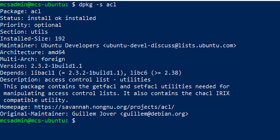
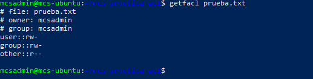
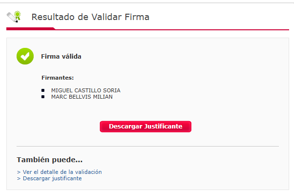
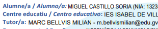

01 · Objetivo y ámbito
Proteger los recursos informáticos mediante contraseñas fuertes y secretas. Se aplica a quienes tengan o sean responsables de cuentas de acceso a sistemas de la UPV.
Controlar el acceso. Proteger la información. Verificar la confianza.
Las ocho actividades del temario de Marc Bellvís, con procedimientos, cálculos, comparativas y evidencias de las pruebas realizadas.
ACTIVIDAD 1 DEL TEMARIO
Permisos Linux, comprobación en Ubuntu y comparación con Windows y macOS.
Los permisos tradicionales distinguen al propietario (u), al grupo propietario (g) y al resto de usuarios (o). Cada categoría dispone de lectura, escritura y ejecución. El primer carácter de ls -l indica el tipo: - es un archivo normal y d un directorio.
| Permiso | Valor | En un archivo | En un directorio |
|---|---|---|---|
| r · lectura | 4 | Leer su contenido. | Listar los nombres que contiene. |
| w · escritura | 2 | Modificar su contenido. | Crear, borrar o renombrar entradas, normalmente junto con x. |
| x · ejecución | 1 | Ejecutar el archivo, si su formato lo permite. | Atravesar el directorio y acceder a entradas conocidas. |
Los valores se suman: 7 = rwx, 6 = rw-, 5 = r-x y 4 = r--. Por ejemplo, chmod 640 informe.txt concede lectura y escritura al propietario, lectura al grupo y ningún permiso al resto. chown modifica el propietario y chgrp el grupo.
umask 002 produce archivos 664 y directorios 775: retira bits, no añade ejecución a los archivos.Equipo: mcs-ubuntu · Usuario: mcsadmin. Se instaló el paquete acl y se consultó su estado:
dpkg -s aclPackage: acl
Status: install ok installed
Architecture: amd64
Version: 2.3.2-1build1.1La línea de estado confirma que el paquete está instalado y configurado. Incluye getfacl para consultar ACL y setfacl para modificarlas. La consulta no cambia permisos. La instalación del paquete no prueba por sí sola que un archivo tenga una ACL extendida.

Se creó un archivo vacío para esta comprobación y se consultaron sus permisos:
mkdir ~/mcs-practica-acl
touch ~/mcs-practica-acl/prueba.txt
ls -l ~/mcs-practica-acl/prueba.txt
getfacl ~/mcs-practica-acl/prueba.txt-rw-rw-r-- 1 mcsadmin mcsadmin 0 oct 29 14:26 /home/mcsadmin/mcs-practica-acl/prueba.txt
# file: home/mcsadmin/mcs-practica-acl/prueba.txt
# owner: mcsadmin
# group: mcsadmin
user::rw-
group::rw-
other::r--
| Entrada | Interpretación |
|---|---|
| user::rw- | El propietario mcsadmin puede leer y escribir. |
| group::rw- | Los miembros del grupo mcsadmin pueden leer y escribir. |
| other::r-- | El resto dispone de lectura, sujeto al acceso por las carpetas superiores. |
| Sin x | No hay permiso de ejecución en ninguna categoría. |
| Sin usuarios adicionales ni mask | Se muestran las entradas básicas; no se ha añadido una ACL extendida. |
Resultado: permisos 664 y tamaño 0 bytes. El aviso Removing leading '/' from absolute path names solo informa de cómo se muestra la ruta. Usar una ruta relativa evita ese aviso.
Se decidió conservar instalado acl: sus utilidades no inician un servicio residente. No fue necesario añadir permisos a otros usuarios para cumplir esta tarea.
| Sistema | Funcionamiento | Consulta y gestión |
|---|---|---|
| Linux | Amplían u/g/o con usuarios y grupos identificados. La máscara limita los permisos efectivos de usuarios nombrados y grupos. Las ACL por defecto de un directorio se heredan al crear objetos. | getfacl archivosetfacl -m u:usuario:r-- archivo |
| Windows | En NTFS se utilizan entradas ACE. La DACL permite o deniega acceso; la SACL define qué accesos auditar cuando la auditoría está configurada. Los permisos pueden heredarse. | Propiedades → Seguridad → Opciones avanzadas.icacls archivo.txt |
| macOS | Combina permisos UNIX con ACL detalladas para usuarios y grupos, entradas de permiso o denegación y herencia. Su sintaxis y evaluación no son idénticas a Linux. | Finder → Obtener información → Compartir y permisos.ls -le archivo.txtGestión de ACL mediante chmod. |
Conclusión: los tres permiten ajustar el acceso más allá de un único propietario y grupo. No se deben trasladar literalmente comandos ni reglas de prioridad de un sistema a otro.
Fuentes: Microsoft · DACL y SACL · Microsoft · icacls · Apple · ACL y herencia
ACTIVIDAD 2 DEL TEMARIO
Esquema de la política UPV, diferenciada de las recomendaciones actuales.
Documento elegido: UPV_Politica_contraseñas.pdf, cuatro páginas, entregado para esta actividad. El esquema resume esa versión y no afirma que represente la política vigente de la universidad.
Proteger los recursos informáticos mediante contraseñas fuertes y secretas. Se aplica a quienes tengan o sean responsables de cuentas de acceso a sistemas de la UPV.
Al menos 15 caracteres. Tres de los cuatro grupos: minúsculas, mayúsculas, números y símbolos, incluyendo siempre símbolos. Evitar diccionario, datos personales y nombres.
En UPVnet: sin espacios ni secuencias de tres o más caracteres del identificador o nombre completo.
El PDF exige cambios al menos cada 6 meses en cuentas de sistema y cada 12 meses en cuentas de usuario. Cambiar ante sospecha de compromiso y sustituir las contraseñas de fábrica antes de producción.
No compartir ni comunicar por correo o teléfono. Evitar reutilización dentro y fuera de la UPV. El documento rechaza guardar claves en papel o archivos sin protección y la función de recordar contraseña de las aplicaciones citadas.
Cuentas individuales, roles para delegar funciones sin compartir claves, almacenamiento que no sea texto claro ni fácilmente reversible, cambio de contraseñas y límite de intentos fallidos.
Comunicar una posible filtración al ASIC y cambiar las contraseñas. La Comisión de Informática decide las acciones ante incumplimientos según las repercusiones.
La seguridad exige elegir y custodiar la clave, diferenciar cuentas, controlar intentos y responder ante incidentes. Las aplicaciones deben permitir que cada acción se asocie a una identidad individual.
NIST SP 800-63B-4 exige al menos 15 caracteres cuando la contraseña es el único factor; permite un mínimo de 8 dentro de autenticación multifactor. Rechaza reglas obligatorias de composición y cambios periódicos arbitrarios; exige cambio si hay evidencia de compromiso. Contempla listas de contraseñas comunes o comprometidas y gestores de contraseñas. Son criterios de esa guía, que no sustituyen automáticamente una política institucional.
Fuentes: NIST · Gestión de contraseñas
ACTIVIDAD 3 DEL TEMARIO
Espacio de búsqueda y tiempo medio de fuerza bruta, calculados paso a paso.
Se suponen contraseñas aleatorias, equiprobables, de longitud fija, repetición permitida y un atacante que prueba sin repetir a 100.000 combinaciones por segundo. No se consideran bloqueos, red ni filtraciones previas.
C: tamaño del alfabeto. L: longitud. R: intentos por segundo. Contando intentos de 1 a N, el promedio exacto es (N + 1) / 2; usamos N / 2 como en el tema.
| Alfabeto supuesto | C | Longitud mínima para 24 h de media |
|---|---|---|
| Solo minúsculas | 26 | 8 |
| Minúsculas + dígitos + 20 símbolos | 56 | 6 |
| Minúsculas + mayúsculas + dígitos | 62 | 6 |
Minúsculas (26) + números (10) + caracteres especiales (20): C = 56.
Resultado: aproximadamente 1 día, 18 horas, 50 minutos y 5 segundos.
ACTIVIDAD 4 DEL TEMARIO
Origen, características y usos de DES, TDES, IDEA, RC5 y AES.
El cifrado simétrico utiliza una clave secreta compartida para cifrar y descifrar. Es adecuado para grandes volúmenes; el reparto y la custodia de la clave son esenciales.
| Algoritmo | Creación | Características | Uso y contexto |
|---|---|---|---|
| DES | Equipo de IBM; estandarizado por NBS en 1977. | Bloques de 64 bits; clave efectiva de 56 bits; 16 rondas, estructura Feistel. | Uso histórico financiero y administrativo. Clave demasiado corta; estándar retirado en 2005. |
| TDES / 3DES / TDEA | Extensión de DES mediante varias aplicaciones de su operación. | Bloques de 64 bits. Tres claves: 168 bits de material de clave; seguridad aproximada de 112 bits por ataques de encuentro a mitad de camino. | Uso histórico bancario y compatibilidad heredada. NIST retiró SP 800-67 en 2024; no aprobar nuevas protecciones con TDEA en ese marco. |
| IDEA | Xuejia Lai y James Massey, alrededor de 1991. | Bloques de 64 bits; clave de 128 bits; ocho rondas y transformación final. Combina XOR, suma y multiplicación. | Utilizado históricamente en PGP; RFC 3058 describe su incorporación a CMS/S-MIME. No equipararlo a DES roto. |
| RC5 | Ronald Rivest, 1994. | Parametrizable en palabra, rondas y longitud de clave. Rotaciones dependientes de datos. RC5-32/12/16: bloque de 64 bits, 12 rondas, clave de 16 bytes. | Implementaciones en RFC 2040 y estudio criptográfico. La seguridad depende de los parámetros; no existe una única configuración RC5. |
| AES | Joan Daemen y Vincent Rijmen: Rijndael, seleccionado por NIST. Estándar de 2001. | Bloques de 128 bits; claves de 128, 192 o 256 bits; 10, 12 o 14 rondas respectivamente. | Cifrado de archivos, discos y protocolos que lo incorporan. Requiere un modo de uso y gestión de claves adecuados. |
AES tiene un bloque mayor que DES, TDES e IDEA. TDES reutiliza DES a costa de más operaciones, mientras que RC5 permite variar parámetros. No basta con comparar bits de clave: importan el diseño, los ataques conocidos, el tamaño de bloque y el modo de uso.
Fuentes: NIST · AES · NIST · DES y retirada TDEA · RFC 3058 · IDEA · RFC 2040 · RC5
ACTIVIDAD 5 DEL TEMARIO
MD4, MD5, RIPEMD-160 y SHA-1: funcionamiento, longitudes y límites.
Una función hash transforma una entrada de longitud variable en un resumen de longitud fija. No emplea una clave de descifrado y no se revierte como un cifrado. Una colisión ocurre cuando dos entradas distintas producen el mismo resumen.
| Función | Origen | Salida | Características y uso |
|---|---|---|---|
| MD4 | Ronald Rivest, 1990. | 128 bits · 32 dígitos hexadecimales. | Diseño rápido con colisiones conocidas; RFC 6150 lo declara histórico. No adecuado para integridad frente a un atacante. |
| MD5 | Ronald Rivest, 1992. | 128 bits · 32 dígitos hexadecimales. | Evolución de MD4 con colisiones prácticas. Persiste en comprobaciones heredadas; no usar cuando se necesita resistencia a colisiones. |
| RIPEMD-160 | Hans Dobbertin, Antoon Bosselaers y Bart Preneel, 1996. | 160 bits · 40 dígitos hexadecimales. | Dos líneas de cálculo paralelas; máximo teórico de unos 80 bits de resistencia genérica a colisiones. No confundir con RIPEMD original. |
| SHA-1 | Diseñado por la NSA; publicado por NIST en 1995. | 160 bits · 40 dígitos hexadecimales. | Uso histórico en firmas e integridad. Colisiones demostradas; NIST anunció la transición completa fuera de SHA-1 para protección criptográfica en 2030. |
Dado un hash, debe ser inviable encontrar una entrada que lo produzca.
Dado un mensaje, debe ser inviable encontrar otro distinto con su mismo hash.
Debe ser inviable encontrar cualquier pareja de mensajes distintos con igual resumen.
El comentario del enunciado sobre resúmenes habituales de 128 a 160 bits corresponde al contexto de esos algoritmos. No limita todas las funciones actuales: SHA-256 produce 256 bits, 64 dígitos hexadecimales.
Fuentes: RFC 6150 · MD4 · RFC 6151 · MD5 · Autores · RIPEMD-160 · NIST · SHA-1
ACTIVIDAD 6 DEL TEMARIO
César, transposición y esteganografía; procedimiento e incidencias del enunciado.
Seguimos el alfabeto del tema: 27 letras, incluyendo ñ. Normalizamos las vocales con tilde a su vocal sin acento; conservamos espacios y mayúsculas. Numerando desde 0: cifrar es sumar x módulo 27 y descifrar es restarlo.
abcdefghijklmnñopqrstuvwxyzTexto: Encriptar por sustitución es muy sencillo.
| Original | a | b | c | d | e | f | g | h | i | j | k | l | m | n | ñ | o | p | q | r | s | t | u | v | w | x | y | z |
|---|---|---|---|---|---|---|---|---|---|---|---|---|---|---|---|---|---|---|---|---|---|---|---|---|---|---|---|
| Cifrado +5 | f | g | h | i | j | k | l | m | n | ñ | o | p | q | r | s | t | u | v | w | x | y | z | a | b | c | d | e |
Ejemplos: E → J, n → r, c → h. Normalizamos ó → o antes de desplazar.
Jrhwnuyfw utw xzxynyzhntr jx qzd xjrhnpptCadena del enunciado:
cskrucsnwkrk dwlj uskrk jnwerlsdt werhsjsrvwkweuj hlsjRestando 9 posiciones con el alfabeto del tema se obtiene literalmente:
tkbjmtkeñbjb uñca mkbjb aeñvjckul ñvjykakjnñbñvma yckaLa transformación es reproducible, pero no forma una frase española legible. Ejemplos: c → t, s → k, k → b. Con el alfabeto alternativo de 26 letras y el mismo desplazamiento tampoco aparece una frase legible.
El texto extraído tiene 48 caracteres, incluidos los espacios; una matriz completa necesita 49. No se especifica el relleno. La reconstrucción coherente consiste en añadir un espacio al final, escribir por filas y leer por columnas, de arriba abajo y de izquierda a derecha.
· representa un espacio; la última casilla es el espacio añadido.
| Fila | 1 | 2 | 3 | 4 | 5 | 6 | 7 |
|---|---|---|---|---|---|---|---|
| 1 | T | o | o | n | a | m | a |
| 2 | a | n | n | t | b | o | n |
| 3 | n | t | t | o | e | · | d |
| 4 | t | a | a | , | l | F | o |
| 5 | o | , | · | · | · | e | . |
| 6 | · | · | t | I | c | r | · |
| 7 | m | m | a | s | o | n | · |
La primera columna da Tanto·m; la segunda, onta,·m. Al unir las siete:
Quedan dos espacios de relleno al final del texto recuperado. La transposición inversa devuelve los 49 caracteres de la reconstrucción.
Redacción corregida: «Utiliza la matriz anterior. Cada punto representa un espacio, incluido el relleno. Lee sus columnas de arriba abajo y de izquierda a derecha para recuperar el mensaje».
Portador: «Siete gatos escondieron una gran ardilla dentro del armario azul azulado». Clave: 164, 0, 4, 65, 16, 8, 0, 8.
| Fila | Ocho posiciones | Decimal | Máscara binaria | Se conserva |
|---|---|---|---|---|
| 1 | Sietegat | 164 | 10100100 | Seg |
| 2 | osescond | 0 | 00000000 | — |
| 3 | ieronuna | 4 | 00000100 | u |
| 4 | granardi | 65 | 01000001 | ri |
| 5 | lladentr | 16 | 00010000 | d |
| 6 | odelarma | 8 | 00001000 | a |
| 7 | rioazula | 0 | 00000000 | — |
| 8 | zulado·· | 8 | 00001000 | d |
Las posiciones de relleno tienen máscara 0. Eliminar los espacios originales es una convención de reconstrucción declarada: incluyéndolos, el resultado no coincide. La esteganografía oculta la existencia del mensaje; el cifrado oculta su significado.
Alfabeto de 27 letras; vocales con tilde normalizadas.
ACTIVIDAD 7 DEL TEMARIO
RSA, ECC y DSS, otros esquemas y relación con el cifrado híbrido.
Los sistemas asimétricos emplean una clave pública y una privada relacionadas matemáticamente. Las operaciones dependen del esquema: no todos sirven para cifrar y no toda operación con clave privada es una firma.
| Aspecto | RSA | ECC | DSS |
|---|---|---|---|
| Qué es | Familia de esquemas basada en RSA, diseñada por Rivest, Shamir y Adleman. | Familia de técnicas sobre curvas elípticas; propuestas por Miller y Koblitz en 1985. | Digital Signature Standard: estándar de firmas del NIST, no un algoritmo único. |
| Base matemática | Seguridad relacionada con la dificultad de factorizar enteros; no implica equivalencia demostrada entre cualquier ataque RSA y factorizar. | Logaritmo discreto en grupos de puntos de una curva, para esquemas clásicos. | Depende del algoritmo de firma definido por el estándar. |
| Operaciones | Cifrado como RSA-OAEP; firmas como RSA-PSS. | ECDH/X25519 para acuerdo de claves; ECDSA/EdDSA para firmas. ECC no es por sí sola una operación de cifrado. | FIPS 186-5 contempla RSA, ECDSA y EdDSA para generar firmas; DSA se conserva para verificar firmas anteriores. |
| Diferencia clave | Módulos habitualmente mayores que las claves de curva para niveles comparables. | Claves compactas; las curvas y parámetros determinan las operaciones. | Finalidad: firma y verificación, no confidencialidad. |
Similitudes: proteger la clave privada, verificar a quién pertenece la pública y usar parámetros adecuados. Pueden integrarse en certificados y protocolos. Diferencia: RSA es una familia de esquemas, ECC una familia de técnicas y DSS un estándar; no son tres algoritmos equivalentes.
| Nombre | Función | Características |
|---|---|---|
| Diffie–Hellman (DH) | Acuerdo de claves. | Genera un secreto compartido. Necesita autenticación frente a intermediarios; no cifra directamente el documento. |
| ElGamal | Cifrado asimétrico. | Logaritmos discretos; cifrado aleatorizado. Incluido en formatos históricos OpenPGP. |
| DSA | Firma digital. | Logaritmos discretos. No cifra; distinguirlo del estándar DSS que lo incluyó históricamente. |
| EdDSA · Ed25519 / Ed448 | Firma sobre curvas Edwards. | Esquemas descritos en RFC 8032; ejemplos dentro de la familia de curvas. |
| X25519 / X448 | Acuerdo de claves sobre curvas. | RFC 7748. No confundir X25519 con Ed25519: tienen funciones diferentes. |
Fuentes: RFC 8017 · RSA · NIST · DSS · RFC 8032 · EdDSA · RFC 7748 · X25519/X448 · RFC 4880 · OpenPGP histórico
ACTIVIDAD 8 DEL TEMARIO
Procedimiento realizado en VALIDe, resultado real y comentario de las capturas.
Se utilizó un documento firmado por Miguel Castillo Soria y Marc Bellvís Milian. Se trabajó con el archivo firmado original, no con una impresión o una imagen de la firma.

La captura identifica a Miguel Castillo Soria y Marc Bellvís Milian. El servicio devuelve un resultado positivo para la firma presentada en la consulta.
La imagen no muestra el detalle técnico de cada firma: no se atribuyen algoritmos, sellos de tiempo ni fechas de vigencia que no aparecen. La validación no demuestra que el contenido sea verdadero; verifica propiedades de la firma según los controles del servicio.
Se accedió a Visualizar Firma con el mismo documento y se capturó una parte del contenido con datos del alumno y del tutor.

Comentario: visualizar permite leer el documento y consultar la presentación de su información; validar comprueba la firma. Un nombre dentro del texto no es por sí solo prueba criptográfica. En este caso, la identificación de ambos firmantes se respalda con el resultado de VALIDe.
| Propiedad | Significado |
|---|---|
| Integridad | Permite detectar modificaciones que afecten a los datos firmados. |
| Autenticidad | Vincula la firma a una clave; la confianza en la identidad depende del certificado y su validación. |
| Evidencia de autoría | Puede aportar evidencia para atribuir la firma; no sustituye todos los requisitos jurídicos o del contexto. |
| Confidencialidad | La firma por sí sola no cifra ni oculta el contenido. |
Fuentes: VALIDe · Servicio oficial · VALIDe · Visualizar Firma
REPASO FINAL // UNITAT 03
| Concepto | Respuesta que debes dominar |
|---|---|
| Identificación / autenticación / autorización | Quién dices ser / cómo lo demuestras / qué puedes hacer. |
| Permisos 664 | Propietario rw-, grupo rw-, otros r--. |
| ACL y máscara | ACL añade usuarios/grupos concretos; mask limita usuarios nombrados y grupos, no propietario ni other. |
| ACL de acceso / por defecto | Acceso actual al objeto / herencia al crear objetos en un directorio. |
| Fuerza bruta | N = C^L; tiempo medio ≈ C^L / (2R), bajo las hipótesis del modelo. |
| 24 horas con C = 56 y R = 100.000 | Mínimo académico: 6 caracteres; tiempo medio ≈ 42,83 horas. |
| Simétrica / asimétrica | Secreto compartido / par de claves pública y privada. |
| AES | Bloque de 128 bits y claves de 128, 192 o 256 bits. |
| Hash | Resumen de longitud fija; no es cifrado reversible ni firma. |
| Colisión | Dos mensajes diferentes con el mismo hash. |
| César y transposición | Sustituir letras / cambiar su posición. |
| Esteganografía | Ocultar que existe un mensaje; el ejercicio recupera «Seguridad». |
| RSA / ECC / DSS | Familia de esquemas / técnicas de curvas / estándar de firmas. |
| Firma digital | Integridad y autenticidad según la validación; no da confidencialidad por sí sola. |
| VALIDe | Validar comprueba la firma; visualizar genera una representación para lectura. |
No. Instala utilidades; los cambios requieren operaciones sobre los objetos.
No. Crece exponencialmente: de C^L a C^(2L).
No. La comprobación criptográfica no verifica la veracidad del contenido.
Definir los 49 caracteres, incluidos los espacios, y el recorrido. La reconstrucción añade un espacio final y lee columnas.
Material docente: UD3_SAD_SeguridadLogica_Marc.pdf, actividades 1–8 de las páginas 10, 12, 17, 32, 43, 54, 64 y 84. Política resumida: UPV_Politica_contraseñas.pdf. INTECO_politicas_contraseñas.pdf se revisó como material complementario.
Las fuentes web se enlazan en cada actividad. Consulta: 29 de octubre de 2026. Los resultados de Ubuntu y VALIDe proceden de las pruebas realizadas para esta página.
Las prácticas independientes de ACL, auditoría de contraseñas y GPG/Seahorse tendrán páginas propias.